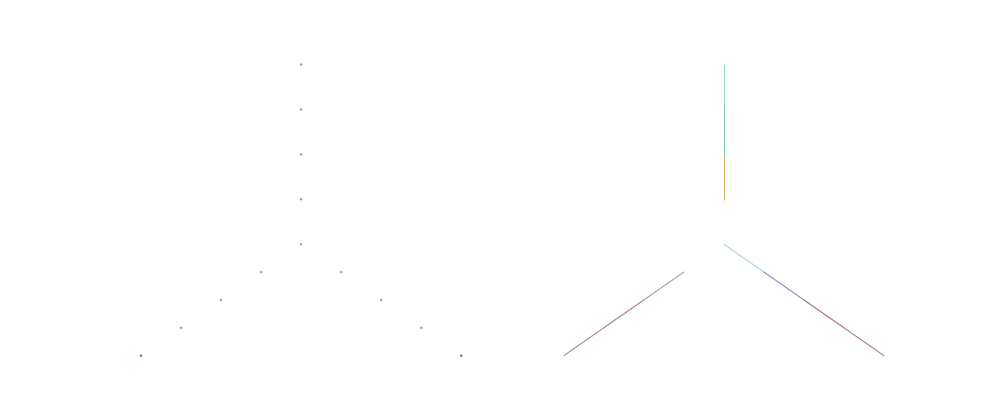

annoy.Index python-api with examples#
An example showing the Index class.
See also
import numpy as np
import random; random.seed(0)
# from annoy import Annoy, AnnoyIndex
# from scikitplot.cexternals._annoy import Annoy, AnnoyIndex
from scikitplot.annoy import Annoy, AnnoyIndex, Index
print(Annoy.__doc__)
Compiled with GCC/Clang. Using 512-bit AVX instructions.
Approximate Nearest Neighbors index (Annoy) with a small, lazy C-extension wrapper.
::
>>> Annoy(
>>> f=None,
>>> metric=None,
>>> *,
>>> n_trees=-1, # None = -1 = auto
>>> n_neighbors=5, # None = 5
>>> on_disk_path=None,
>>> prefault=None,
>>> seed=None,
>>> verbose=None,
>>> schema_version=None,
>>> n_jobs=None, # None = -1
>>> l1_ratio = 0.0, # None = 0.0 Future
>>> )
Parameters
----------
f : int or None, optional, default=None
Vector dimension. If ``0`` or ``None``, dimension may be inferred from the
first vector passed to ``add_item`` (lazy mode).
If None, treated as ``0`` (reset to default).
metric : {"angular", "cosine", "euclidean", "l2", "lstsq", "manhattan", "l1", "cityblock", "taxicab", "dot", "@", ".", "dotproduct", "inner", "innerproduct", "hamming"} or None, optional, default=None
Distance metric (one of 'angular', 'euclidean', 'manhattan', 'dot', 'hamming').
If omitted and ``f > 0``, defaults to ``'angular'`` (cosine-like).
If omitted and ``f == 0``, metric may be set later before construction.
If None, behavior depends on ``f``:
* If ``f > 0``: defaults to ``'angular'`` (legacy behavior; may emit a
:class:`FutureWarning`).
* If ``f == 0``: leaves the metric unset (lazy). You may set
:attr:`metric` later before construction, or it will default to
``'angular'`` on first :meth:`add_item`.
n_trees : int, default=-1
Number of trees to build. If -1, auto-selects based on dimension.
More trees = better accuracy but slower queries and more memory.
n_neighbors : int, default=5
Non-negative integer Number of neighbors to retrieve for each query.
on_disk_path : str or None, optional, default=None
If provided, configures the path for on-disk building. When the underlying
index exists, this enables on-disk build mode (equivalent to calling
:meth:`on_disk_build` with the same filename).
Note: Annoy core truncates the target file when enabling on-disk build.
This wrapper treats ``on_disk_path`` as strictly equivalent to calling
:meth:`on_disk_build` with the same filename (truncate allowed).
In lazy mode (``f==0`` and/or ``metric is None``), activation occurs once
the underlying C++ index is created.
prefault : bool or None, optional, default=None
If True, request page-faulting index pages into memory when loading
(when supported by the underlying platform/backing).
If None, treated as ``False`` (reset to default).
seed : int or None, optional, default=None
Non-negative integer seed. If set before the index is constructed,
the seed is stored and applied when the C++ index is created.
Seed value ``0`` is treated as \"use Annoy's deterministic default seed\"
(a :class:`UserWarning` is emitted when ``0`` is explicitly provided).
verbose : int or None, optional, default=None
Verbosity level. Values are clamped to the range ``[-2, 2]``.
``level >= 1`` enables Annoy's verbose logging; ``level <= 0`` disables it.
Logging level inspired by gradient-boosting libraries:
* ``<= 0`` : quiet (warnings only)
* ``1`` : info (Annoy's ``verbose=True``)
* ``>= 2`` : debug (currently same as info, reserved for future use)
schema_version : int, optional, default=None
Serialization/compatibility strategy marker.
This does not change the Annoy on-disk format, but it *does* control
how the index is snapshotted in pickles.
* ``0`` or ``1``: pickle stores a ``portable-v1`` snapshot (fast restore,
ABI-checked).
* ``2``: pickle stores ``canonical-v1`` (portable across ABIs; restores by
rebuilding deterministically).
* ``>=3``: pickle stores both portable and canonical (canonical is used as
a fallback if the ABI check fails).
If None, treated as ``0`` (reset to default).
n_jobs : int or None, default=None
Number of threads. If -1, uses all available cores.
If None, treated as ``-1``.
Attributes
----------
f : int, default=0
Vector dimension. ``0`` means "unknown / lazy".
metric : {'angular', 'euclidean', 'manhattan', 'dot', 'hamming'}, default="angular"
Canonical metric name, or None if not configured yet (lazy).
n_neighbors : int, default=5
Non-negative integer Number of neighbors to retrieve for each query.
on_disk_path : str or None, optional, default=None
Configured on-disk build path. Setting this attribute enables on-disk
build mode (equivalent to :meth:`on_disk_build`), with safety checks
to avoid implicit truncation of existing files.
prefault : bool, default=False
Stored prefault flag (see :meth:`load`/`:meth:`save` prefault parameters).
seed : int or None, optional, default=None
Non-negative integer seed. Also provides :meth:`random_state`
verbose : int or None, optional, default=None
Verbosity level.
schema_version : int, default=0
Reserved schema/version marker (stored; does not affect on-disk format).
n_features : int
Alias of :meth:`f` (dimension), provided for scikit-learn naming parity.
Also provides :meth:`n_features_`, :meth:`n_features_in_`.
n_features_out_ : int
Number of output features produced by transform.
feature_names_in_ : list-like
Input feature names seen during fit.
Set only when explicitly provided via fit(..., feature_names=...).
y : list-like | None, optional, default=None
Dense label cache aligned to item ids (``0 .. n_items-1``). This is a
convenience view for scikit-learn style APIs and may be derived from
``y_map`` lazily.
The setter accepts sequences only (a dict is not allowed); when possible it
validates that ``len(y) == n_items`` and updates ``y_map`` deterministically.
y_map : dict | None, optional, default=None
Canonical sparse mapping ``{item_id -> label}``. Keys must be non-negative
integers and (when an index exists) strictly less than ``n_items``.
Setting this property invalidates the dense ``y`` cache; ``y`` is
materialized lazily (missing keys become ``None``).
See Also
--------
add_item : Add a vector to the index.
build : Build the forest after adding items.
unbuild : Remove trees to allow adding more items.
get_nns_by_item, get_nns_by_vector : Query nearest neighbours.
save, load : Persist the index to/from disk.
serialize, deserialize : Persist the index to/from bytes.
set_seed : Set the random seed deterministically.
set_verbose : Set verbosity level.
info : Return a structured summary of the current index.
Notes
-----
* Once the underlying C++ index is created, ``f`` and ``metric`` are immutable.
This keeps the object consistent and avoids undefined behavior.
* The C++ index is created lazily when sufficient information is available:
when both ``f > 0`` and ``metric`` are known, or when an operation that
requires the index is first executed.
* If ``f == 0``, the dimensionality is inferred from the first non-empty vector
passed to :meth:`add_item` and is then fixed for the lifetime of the index.
* Assigning ``None`` to :attr:`f` is not supported. Use ``0`` for lazy
inference (this matches ``Annoy(f=None, ...)`` at construction time).
* If ``metric`` is omitted while ``f > 0``, the current behavior defaults to
``'angular'`` and may emit a :class:`FutureWarning`. To avoid warnings and
future behavior changes, always pass ``metric=...`` explicitly.
* Items must be added *before* calling :meth:`build`. After :meth:`build`, the
index becomes read-only; to add more items, call :meth:`unbuild`, add items
again with :meth:`add_item`, then call :meth:`build` again.
* Very large indexes can be built directly on disk with :meth:`on_disk_build`
and then memory-mapped with :meth:`load`.
* :meth:`info` returns a structured summary (dimension, metric, counts, and
optional memory usage) suitable for programmatic inspection.
* This wrapper stores user configuration (e.g., seed/verbosity) even before the
C++ index exists and applies it deterministically upon construction.
Developer Notes:
- Source of truth:
* ``f`` (int) and ``metric_id`` (enum) describe configuration.
* ``ptr`` is NULL when index is not constructed.
- Invariant:
* ``ptr != NULL`` implies ``f > 0`` and ``metric_id != METRIC_UNKNOWN``.
Examples
--------
>>> from annoy import Annoy, AnnoyIndex
High-level API:
>>> from scikitplot.cexternals._annoy import Annoy, AnnoyIndex
>>> from scikitplot.annoy import Annoy, AnnoyIndex, Index
The lifecycle follows the examples in ``test.ipynb``:
1. **Construct the index**
>>> import random; random.seed(0)
>>> # from annoy import AnnoyIndex
>>> from scikitplot.cexternals._annoy import Annoy, AnnoyIndex
>>> from scikitplot.annoy import Annoy, AnnoyIndex, Index
>>> idx = Annoy(f=3, metric="angular")
>>> idx.f, idx.metric
(3, 'angular')
If you pass ``f=0`` the dimension can be inferred on the first
call to :meth:`add_item`.
2. **Add items**
>>> idx.add_item(0, [1.0, 0.0, 0.0])
>>> idx.add_item(1, [0.0, 1.0, 0.0])
>>> idx.add_item(2, [0.0, 0.0, 1.0])
>>> idx.get_n_items()
3
3. **Build the forest**
>>> idx.build(n_trees=-1)
>>> idx.get_n_trees()
10
>>> idx.memory_usage() # byte
543076
After :meth:`build` the index becomes read-only. You can still
query, save, load and serialize it.
4. **Query neighbours**
By stored item id:
>>> idx.get_nns_by_item(0, 5)
[0, 1, 2, ...]
With distances:
>>> idx.get_nns_by_item(0, 5, include_distances=True)
([0, 1, 2, ...], [0.0, 1.22, 1.26, ...])
Or by an explicit query vector:
>>> idx.get_nns_by_vector([0.1, 0.2, 0.3], 5, include_distances=True)
([103, 71, 160, 573, 672], [...])
5. **Persistence**
To work with memory-mapped indices on disk:
>>> idx.save("annoy_test.annoy")
>>> idx2 = Annoy(f=100, metric="angular")
>>> idx2.load("annoy_test.annoy")
>>> idx2.get_n_items()
1000
Or via raw byte:
>>> buf = idx.serialize()
>>> new_idx = Annoy(f=100, metric="angular")
>>> new_idx.deserialize(buf)
>>> new_idx.get_n_items()
1000
You can release OS resources with :meth:`unload` and drop the
current forest with :meth:`unbuild`.
print(Index.__doc__)
High-level ANNoy index composed from mixins.
Parameters
----------
f : int or None, optional, default=None
Vector dimension. If ``0`` or ``None``, dimension may be inferred from the
first vector passed to ``add_item`` (lazy mode).
If None, treated as ``0`` (reset to default).
metric : {"angular", "cosine", "euclidean", "l2", "lstsq", "manhattan", "l1", "cityblock", "taxicab", "dot", "@", ".", "dotproduct", "inner", "innerproduct", "hamming"} or None, optional, default=None
Distance metric (one of 'angular', 'euclidean', 'manhattan', 'dot', 'hamming').
If omitted and ``f > 0``, defaults to ``'angular'`` (cosine-like).
If omitted and ``f == 0``, metric may be set later before construction.
If None, behavior depends on ``f``:
* If ``f > 0``: defaults to ``'angular'`` (legacy behavior; may emit a
:class:`FutureWarning`).
* If ``f == 0``: leaves the metric unset (lazy). You may set
:attr:`metric` later before construction, or it will default to
``'angular'`` on first :meth:`add_item`.
n_neighbors : int, default=5
Non-negative integer Number of neighbors to retrieve for each query.
on_disk_path : str or None, optional, default=None
If provided, configures the path for on-disk building. When the underlying
index exists, this enables on-disk build mode (equivalent to calling
:meth:`on_disk_build` with the same filename).
Note: Annoy core truncates the target file when enabling on-disk build.
This wrapper treats ``on_disk_path`` as strictly equivalent to calling
:meth:`on_disk_build` with the same filename (truncate allowed).
In lazy mode (``f==0`` and/or ``metric is None``), activation occurs once
the underlying C++ index is created.
prefault : bool or None, optional, default=None
If True, request page-faulting index pages into memory when loading
(when supported by the underlying platform/backing).
If None, treated as ``False`` (reset to default).
seed : int or None, optional, default=None
Non-negative integer seed. If set before the index is constructed,
the seed is stored and applied when the C++ index is created.
Seed value ``0`` is treated as "use Annoy's deterministic default seed"
(a :class:`UserWarning` is emitted when ``0`` is explicitly provided).
verbose : int or None, optional, default=None
Verbosity level. Values are clamped to the range ``[-2, 2]``.
``level >= 1`` enables Annoy's verbose logging; ``level <= 0`` disables it.
Logging level inspired by gradient-boosting libraries:
* ``<= 0`` : quiet (warnings only)
* ``1`` : info (Annoy's ``verbose=True``)
* ``>= 2`` : debug (currently same as info, reserved for future use)
schema_version : int, optional, default=None
Serialization/compatibility strategy marker.
This does not change the Annoy on-disk format, but it *does* control
how the index is snapshotted in pickles.
* ``0`` or ``1``: pickle stores a ``portable-v1`` snapshot (fast restore,
ABI-checked).
* ``2``: pickle stores ``canonical-v1`` (portable across ABIs; restores by
rebuilding deterministically).
* ``>=3``: pickle stores both portable and canonical (canonical is used as
a fallback if the ABI check fails).
If None, treated as ``0`` (reset to default).
Attributes
----------
f : int, default=0
Vector dimension. ``0`` means "unknown / lazy".
metric : {'angular', 'euclidean', 'manhattan', 'dot', 'hamming'}, default="angular"
Canonical metric name, or None if not configured yet (lazy).
n_neighbors : int, default=5
Non-negative integer Number of neighbors to retrieve for each query.
on_disk_path : str or None, optional, default=None
Configured on-disk build path. Setting this attribute enables on-disk
build mode (equivalent to :meth:`on_disk_build`), with safety checks
to avoid implicit truncation of existing files.
seed, random_state : int or None, optional, default=None
Non-negative integer seed.
verbose : int or None, optional, default=None
Verbosity level.
prefault : bool, default=False
Stored prefault flag (see :meth:`load`/`:meth:`save` prefault parameters).
schema_version : int, default=0
Reserved schema/version marker (stored; does not affect on-disk format).
n_features, n_features_, n_features_in_ : int
Alias of `f` (dimension), provided for scikit-learn naming parity.
n_features_out_ : int
Number of output features produced by transform.
feature_names_in_ : list-like
Input feature names seen during fit.
Set only when explicitly provided via fit(..., feature_names=...).
y : dict | None, optional, default=None
If provided to fit(X, y), labels are stored here after a successful build.
You may also set this property manually. When possible, the setter enforces
that len(y) matches the current number of items (n_items).
pickle_mode : PickleMode
Pickle strategy used by :class:`~scikitplot.annoy._mixins._pickle.PickleMixin`.
compress_mode : CompressMode or None
Optional compression used by :class:`~scikitplot.annoy._mixins._pickle.PickleMixin`
when serializing to bytes.
Notes
-----
This class is a direct subclass of the C-extension backend. It does not
override ``__new__`` and does not rely on cooperative initialization across
mixins. Mixins must be written so that their methods work even if they
define no ``__init__`` at all.
See Also
--------
scikitplot.cexternals._annoy.Annoy
Index.from_low_level
from scikitplot import annoy
annoy.__version__, dir(annoy), dir(annoy.Annoy)
('2.0.0+git.20251130.8a7e82cb537053926b0ac6ec132b9ccc875af40c', ['Annoy', 'AnnoyIndex', 'CompressMode', 'Index', 'IndexIOMixin', 'MetaMixin', 'NDArrayMixin', 'PickleMixin', 'PickleMode', 'PlottingMixin', 'VectorOpsMixin', '__all__', '__author__', '__author_email__', '__builtins__', '__cached__', '__doc__', '__file__', '__git_hash__', '__loader__', '__name__', '__package__', '__path__', '__spec__', '__version__', '_base', '_metadata', '_mixins', '_utils', 'annotations', 'annoylib'], ['__class__', '__delattr__', '__dict__', '__dir__', '__doc__', '__eq__', '__format__', '__ge__', '__getattribute__', '__getstate__', '__gt__', '__hash__', '__init__', '__init_subclass__', '__le__', '__len__', '__lt__', '__ne__', '__new__', '__reduce__', '__reduce_ex__', '__repr__', '__setattr__', '__setstate__', '__sizeof__', '__sklearn_clone__', '__sklearn_is_fitted__', '__sklearn_tags__', '__str__', '__subclasshook__', '_f', '_metric_id', '_on_disk_path', '_prefault', '_repr_html_', '_schema_version', '_y', '_y_map', 'add_item', 'build', 'deserialize', 'f', 'feature_names_in_', 'fit', 'fit_transform', 'get_distance', 'get_feature_names_out', 'get_item', 'get_n_items', 'get_n_trees', 'get_nns_by_item', 'get_nns_by_vector', 'get_params', 'info', 'load', 'memory_usage', 'metric', 'n_features', 'n_features_', 'n_features_in_', 'n_features_out_', 'n_neighbors', 'on_disk_build', 'on_disk_path', 'prefault', 'random_state', 'rebuild', 'repr_info', 'save', 'schema_version', 'seed', 'serialize', 'set_params', 'set_seed', 'set_verbose', 'set_verbosity', 'transform', 'unbuild', 'unload', 'verbose', 'y', 'y_map'])
import sys
# TODO: change this import to wherever your modified AnnoyIndex lives
# e.g. scikitplot.cexternals._annoy or similar
# import scikitplot.cexternals._annoy as annoy
from scikitplot import annoy
sys.modules["annoy"] = annoy # now `import annoy` will resolve to your module
import annoy
print(annoy.__doc__)
scikitplot.annoy
================
Public Annoy Python API for scikitplot.
Spotify ANNoy [1]_ (Approximate Nearest Neighbors Oh Yeah).
This package exposes **two layers**:
Exports:
1. Low-level C-extension types copied from Spotify's *annoy* project:
:class:`~scikitplot.cexternals._annoy.Annoy` and :class:`~scikitplot.cexternals._annoy.AnnoyIndex`.
2. A high-level, mixin-composed wrapper :class:`~scikitplot.annoy.Index` that:
- forwards the complete low-level API deterministically,
- adds versioned manifest import/export,
- provides explicit index I/O names (``save_index`` / ``load_index``),
- provides safe Python-object persistence helpers (pickling),
- adds optional NumPy export and plotting utilities.
Notes
-----
This module intentionally avoids side effects at import time (no implicit NumPy
or matplotlib imports).
.. seealso::
* :ref:`ANNoy <annoy-index>`
* :ref:`cexternals/ANNoy <cexternals-annoy-index>`
* https://github.com/spotify/annoy
* https://pypi.org/project/annoy
See Also
--------
scikitplot.cexternals._annoy
Low-level C-extension backend.
scikitplot.annoy.Index
High-level wrapper composed from mixins.
References
----------
.. [1] `Spotify AB. (2013, Feb 20). "ANNoy: Approximate Nearest Neighbors Oh Yeah"
Github. https://github.com/spotify/annoy <https://github.com/spotify/annoy>`_
Examples
--------
>>> import random
>>> random.seed(0)
>>> # from annoy import AnnoyIndex
>>> from scikitplot.cexternals._annoy import Annoy, AnnoyIndex
>>> from scikitplot.annoy import Annoy, AnnoyIndex, Index
>>> f = 40 # vector dimensionality
>>> t = Index(f, "angular") # same constructor as the low-level backend
>>> t.add_item(0, [1] * f)
>>> t.build(10) # Build 10 trees
>>> t.get_nns_by_item(0, 1) # Find nearest neighbor
Index()
# =============================================================
# 1. Construction
# =============================================================
idx = Index()
idx = Index(None, None)
print("Index dimension:", idx.f)
print("Metric :", idx.metric)
print(idx.info())
print(idx)
print(type(idx))
idx
# help(idx.info)
Index dimension: 0
Metric : None
{'f': 0, 'metric': None, 'n_neighbors': 5, 'on_disk_path': None, 'prefault': False, 'seed': None, 'verbose': None, 'schema_version': 0, 'n_items': 0, 'n_trees': 0}
Annoy(**{'f': 0, 'metric': None, 'n_neighbors': 5, 'on_disk_path': None, 'prefault': False, 'seed': None, 'verbose': None, 'schema_version': 0})
<class 'scikitplot.annoy._base.Index'>
dir(idx)
['_META_SCHEMA_VERSION', '_PICKLE_STATE_VERSION', '__annotations__', '__class__', '__delattr__', '__dict__', '__dir__', '__doc__', '__eq__', '__format__', '__ge__', '__getattribute__', '__getstate__', '__gt__', '__hash__', '__init__', '__init_subclass__', '__le__', '__len__', '__lt__', '__module__', '__ne__', '__new__', '__reduce__', '__reduce_ex__', '__repr__', '__setattr__', '__setstate__', '__sizeof__', '__sklearn_clone__', '__sklearn_is_fitted__', '__sklearn_tags__', '__str__', '__subclasshook__', '__weakref__', '_as_2d_coords', '_backend', '_compress_mode', '_f', '_get_lock', '_lock', '_metric_id', '_ndarray_expected_rows', '_ndarray_infer_f', '_ndarray_iter_ids', '_ndarray_materialize_dense', '_ndarray_require_unbuilt', '_on_disk_path', '_pickle_mode', '_plotting_backend', '_prefault', '_rebuild', '_repr_html_', '_schema_version', '_y', '_y_map', 'add_item', 'add_items', 'backend', 'build', 'compress_mode', 'deserialize', 'f', 'feature_names_in_', 'fit', 'fit_transform', 'from_bytes', 'from_json', 'from_low_level', 'from_metadata', 'from_yaml', 'get_distance', 'get_feature_names_out', 'get_item', 'get_item_vectors', 'get_n_items', 'get_n_trees', 'get_nns_by_item', 'get_nns_by_vector', 'get_params', 'info', 'iter_item_vectors', 'kneighbors', 'kneighbors_graph', 'load', 'load_bundle', 'load_index', 'memory_usage', 'metric', 'n_features', 'n_features_', 'n_features_in_', 'n_features_out_', 'n_neighbors', 'on_disk_build', 'on_disk_path', 'pickle_mode', 'plot_index', 'plot_knn_edges', 'prefault', 'query_by_item', 'query_by_vector', 'query_vectors_by_item', 'query_vectors_by_vector', 'random_state', 'rebuild', 'repr_info', 'save', 'save_bundle', 'save_index', 'schema_version', 'seed', 'serialize', 'set_params', 'set_seed', 'set_verbose', 'set_verbosity', 'to_bytes', 'to_json', 'to_metadata', 'to_numpy', 'to_pandas', 'to_scipy_csr', 'to_yaml', 'transform', 'unbuild', 'unload', 'verbose', 'y', 'y_map']
# AttributeError: readonly attribute
# idx._metric_id = 1
idx._f, idx._metric_id, idx._on_disk_path
(0, 0, None)
idx.f, idx.metric, idx.on_disk_path
(0, None, None)
idx.metric = "dot"
idx
idx.f, idx.metric, idx.on_disk_path
(0, 'dot', None)
type(idx)
# =============================================================
# 1. Construction
# =============================================================
idx = Index(f=3, metric="angular")
print("Index dimension:", idx.f)
print("Metric :", idx.metric)
print(idx.info())
print(idx)
idx
Index dimension: 3
Metric : angular
{'f': 3, 'metric': 'angular', 'n_neighbors': 5, 'on_disk_path': None, 'prefault': False, 'seed': None, 'verbose': None, 'schema_version': 0, 'n_items': 0, 'n_trees': 0}
Annoy(**{'f': 3, 'metric': 'angular', 'n_neighbors': 5, 'on_disk_path': None, 'prefault': False, 'seed': None, 'verbose': None, 'schema_version': 0})
# =============================================================
# 2. Add items
# =============================================================
idx.add_item(0, [0, 0, 0])
idx.add_item(1, [1, 0, 0])
idx.add_item(2, [0, 1, 0])
idx.add_item(3, [0, 0, 1])
idx.add_item(4, [2, 0, 0])
idx.add_item(5, [0, 2, 0])
idx.add_item(6, [0, 0, 2])
idx.add_item(7, [3, 0, 0])
idx.add_item(8, [0, 3, 0])
idx.add_item(9, [0, 0, 3])
idx.add_item(10, [4, 0, 0])
idx.add_item(11, [0, 4, 0])
idx.add_item(12, [0, 0, 4])
idx.add_item(12, [4, 0, 0])
idx.add_item(13, [0, 4, 0])
idx.add_item(14, [0, 0, 4])
print("Number of items:", idx.get_n_items())
print("Index dimension:", idx.f)
print("Metric :", idx.metric)
print(idx.info())
print(idx)
idx
Number of items: 15
Index dimension: 3
Metric : angular
{'f': 3, 'metric': 'angular', 'n_neighbors': 5, 'on_disk_path': None, 'prefault': False, 'seed': None, 'verbose': None, 'schema_version': 0, 'n_items': 15, 'n_trees': 0}
Annoy(**{'f': 3, 'metric': 'angular', 'n_neighbors': 5, 'on_disk_path': None, 'prefault': False, 'seed': None, 'verbose': None, 'schema_version': 0})
def plot(idx, y=None, **kwargs):
import numpy as np
import matplotlib.pyplot as plt
import scikitplot.cexternals._annoy._plotting as utils
single = np.zeros(idx.get_n_items(), dtype=int)
if y is None:
double = np.random.uniform(0, 1, idx.get_n_items()).round()
# single vs double
fig, ax = plt.subplots(ncols=2, figsize=(12, 5))
alpha = kwargs.pop("alpha", 0.8)
y2 = utils.plot_annoy_index(
idx,
dims = list(range(idx.f)),
plot_kwargs={"draw_legend": False},
ax=ax[0],
)[0]
utils.plot_annoy_knn_edges(
idx,
y2,
k=1,
line_kwargs={"alpha": alpha},
ax=ax[1],
)
idx.unbuild()
idx.build(100)
plot(idx)

from scikitplot import annoy as a
print(a.Annoy) # same
print(a.AnnoyIndex) # same
print(a.Index) # should show <class '..._base.Index'>
print(isinstance(idx, a.Annoy))
print(isinstance(idx, a.AnnoyIndex))
print(isinstance(idx, a.Index))
print(type(idx))
print(idx.__class__.__module__)
print(idx.__class__.__mro__)
<class 'scikitplot.cexternals._annoy.Annoy'>
<class 'scikitplot.cexternals._annoy.Annoy'>
<class 'scikitplot.annoy._base.Index'>
True
True
True
<class 'scikitplot.annoy._base.Index'>
scikitplot.annoy._base
(<class 'scikitplot.annoy._base.Index'>, <class 'scikitplot.cexternals._annoy.Annoy'>, <class 'scikitplot.annoy._mixins._meta.MetaMixin'>, <class 'scikitplot.annoy._mixins._io.IndexIOMixin'>, <class 'scikitplot.annoy._mixins._pickle.PickleMixin'>, <class 'scikitplot.annoy._mixins._vectors.VectorOpsMixin'>, <class 'scikitplot.annoy._mixins._ndarray.NDArrayMixin'>, <class 'scikitplot.annoy._mixins._plotting.PlottingMixin'>, <class 'object'>)
# =============================================================
# 1. Construction
# =============================================================
idx = Index(f=3, metric="angular")
print("Index dimension:", idx.f)
print("Metric :", idx.metric)
print(idx.info())
print(idx)
idx
Index dimension: 3
Metric : angular
{'f': 3, 'metric': 'angular', 'n_neighbors': 5, 'on_disk_path': None, 'prefault': False, 'seed': None, 'verbose': None, 'schema_version': 0, 'n_items': 0, 'n_trees': 0}
Annoy(**{'f': 3, 'metric': 'angular', 'n_neighbors': 5, 'on_disk_path': None, 'prefault': False, 'seed': None, 'verbose': None, 'schema_version': 0})
# =============================================================
# 2. Add items
# =============================================================
idx.add_item(0, [1, 0, 0])
idx.add_item(1, [0, 1, 0])
idx.add_item(2, [0, 0, 1])
print("Number of items:", idx.get_n_items())
print("Index dimension:", idx.f)
print("Metric :", idx.metric)
Number of items: 3
Index dimension: 3
Metric : angular
# =============================================================
# 1. Construction
# =============================================================
idx = Index(100, metric="angular")
print("Index dimension:", idx.f)
print("Metric :", idx.metric)
idx.on_disk_build("annoy_test_2.annoy")
# help(idx.on_disk_build)
Index dimension: 100
Metric : angular
# =============================================================
# 2. Add items
# =============================================================
f=100
n=1000
for i in range(n):
if(i % (n//10) == 0): print(f"{i} / {n} = {1.0 * i / n}")
# v = []
# for z in range(f):
# v.append(random.gauss(0, 1))
v = [random.gauss(0, 1) for _ in range(f)]
idx.add_item(i, v)
print("Number of items:", idx.get_n_items())
print("Index dimension:", idx.f)
print("Metric :", idx.metric)
print(idx)
0 / 1000 = 0.0
100 / 1000 = 0.1
200 / 1000 = 0.2
300 / 1000 = 0.3
400 / 1000 = 0.4
500 / 1000 = 0.5
600 / 1000 = 0.6
700 / 1000 = 0.7
800 / 1000 = 0.8
900 / 1000 = 0.9
Number of items: 1000
Index dimension: 100
Metric : angular
Annoy(**{'f': 100, 'metric': 'angular', 'n_neighbors': 5, 'on_disk_path': 'annoy_test_2.annoy', 'prefault': False, 'seed': None, 'verbose': None, 'schema_version': 0})
# =============================================================
# 3. Build index
# =============================================================
idx.build(10)
print("Trees:", idx.get_n_trees())
print("Memory usage:", idx.memory_usage(), "bytes")
print(idx.info())
print(idx)
idx
# help(idx.build)
Trees: 10
Memory usage: 688688 bytes
{'f': 100, 'metric': 'angular', 'n_neighbors': 5, 'on_disk_path': 'annoy_test_2.annoy', 'prefault': False, 'seed': None, 'verbose': None, 'schema_version': 0, 'n_items': 1000, 'n_trees': 10, 'memory_usage_byte': 688688, 'memory_usage_mib': 0.6567840576171875}
Annoy(**{'f': 100, 'metric': 'angular', 'n_neighbors': 5, 'on_disk_path': 'annoy_test_2.annoy', 'prefault': False, 'seed': None, 'verbose': None, 'schema_version': 0})
idx.unbuild()
print(idx.info())
print(idx)
idx
{'f': 100, 'metric': 'angular', 'n_neighbors': 5, 'on_disk_path': 'annoy_test_2.annoy', 'prefault': False, 'seed': None, 'verbose': None, 'schema_version': 0, 'n_items': 1000, 'n_trees': 0}
Annoy(**{'f': 100, 'metric': 'angular', 'n_neighbors': 5, 'on_disk_path': 'annoy_test_2.annoy', 'prefault': False, 'seed': None, 'verbose': None, 'schema_version': 0})
idx.build(10)
print(idx.info())
print(idx)
idx
{'f': 100, 'metric': 'angular', 'n_neighbors': 5, 'on_disk_path': 'annoy_test_2.annoy', 'prefault': False, 'seed': None, 'verbose': None, 'schema_version': 0, 'n_items': 1000, 'n_trees': 10, 'memory_usage_byte': 688688, 'memory_usage_mib': 0.6567840576171875}
Annoy(**{'f': 100, 'metric': 'angular', 'n_neighbors': 5, 'on_disk_path': 'annoy_test_2.annoy', 'prefault': False, 'seed': None, 'verbose': None, 'schema_version': 0})
# =============================================================
# 1. Construction
# =============================================================
idx = Index(0, metric="angular")
print("Index dimension:", idx.f)
print("Metric :", idx.metric)
print(idx.info())
print(idx)
idx
Index dimension: 0
Metric : angular
{'f': 0, 'metric': 'angular', 'n_neighbors': 5, 'on_disk_path': None, 'prefault': False, 'seed': None, 'verbose': None, 'schema_version': 0, 'n_items': 0, 'n_trees': 0}
Annoy(**{'f': 0, 'metric': 'angular', 'n_neighbors': 5, 'on_disk_path': None, 'prefault': False, 'seed': None, 'verbose': None, 'schema_version': 0})
# =============================================================
# 2. Add items
# =============================================================
f=100
n=1000
for i in range(n):
if(i % (n//10) == 0): print(f"{i} / {n} = {1.0 * i / n}")
# v = []
# for z in range(f):
# v.append(random.gauss(0, 1))
v = [random.gauss(0, 1) for _ in range(f)]
idx.add_item(i, v)
print("Number of items:", idx.get_n_items())
print("Index dimension:", idx.f)
print("Metric :", idx.metric)
print(idx)
0 / 1000 = 0.0
100 / 1000 = 0.1
200 / 1000 = 0.2
300 / 1000 = 0.3
400 / 1000 = 0.4
500 / 1000 = 0.5
600 / 1000 = 0.6
700 / 1000 = 0.7
800 / 1000 = 0.8
900 / 1000 = 0.9
Number of items: 1000
Index dimension: 100
Metric : angular
Annoy(**{'f': 100, 'metric': 'angular', 'n_neighbors': 5, 'on_disk_path': None, 'prefault': False, 'seed': None, 'verbose': None, 'schema_version': 0})
# =============================================================
# 3. Build index
# =============================================================
idx.build(10)
print("Trees:", idx.get_n_trees())
print("Memory usage:", idx.memory_usage(), "bytes")
print(idx.info())
print(idx)
idx
# help(idx.get_n_trees)
Trees: 10
Memory usage: 818008 bytes
{'f': 100, 'metric': 'angular', 'n_neighbors': 5, 'on_disk_path': None, 'prefault': False, 'seed': None, 'verbose': None, 'schema_version': 0, 'n_items': 1000, 'n_trees': 10, 'memory_usage_byte': 818008, 'memory_usage_mib': 0.7801132202148438}
Annoy(**{'f': 100, 'metric': 'angular', 'n_neighbors': 5, 'on_disk_path': None, 'prefault': False, 'seed': None, 'verbose': None, 'schema_version': 0})
# =============================================================
# 4. Query — return
# =============================================================
res = idx.get_nns_by_item(
0,
5,
# search_k = -1,
include_distances=True,
)
print(res)
([0, 183, 596, 293, 132], [0.0, 1.1197848320007324, 1.2014238834381104, 1.201889991760254, 1.2221797704696655])
# =============================================================
# 8. Query using vector
# =============================================================
res2 = idx.get_nns_by_vector(
[random.gauss(0, 1) for _ in range(f)],
5,
include_distances=True
)
print("\nQuery by vector:", res2)
Query by vector: ([543, 406, 539, 833, 868], [1.244363784790039, 1.2754391431808472, 1.2776145935058594, 1.2818483114242554, 1.2914206981658936])
# =============================================================
# 9. Low-level (non-result) mode
# =============================================================
items = idx.get_nns_by_item(0, 2, include_distances=False)
print("\nLow-level items only:", items)
items_low, d_low = idx.get_nns_by_item(0, 2, include_distances=True)
print("Low-level tuple return:", items_low, d_low)
Low-level items only: [0, 293]
Low-level tuple return: [0, 293] [0.0, 1.201889991760254]
# =============================================================
# 10. Persistence
# =============================================================
print("\n=== Saving with binary annoy ===")
print(idx.info())
print(idx)
idx
idx.save("annoy_test_2.annoy")
print(idx.info())
print(idx)
idx
print("Loading...")
idx2 = Index(100, metric='angular').load("annoy_test_2.annoy")
print("Loaded index:", idx2)
=== Saving with binary annoy ===
{'f': 100, 'metric': 'angular', 'n_neighbors': 5, 'on_disk_path': None, 'prefault': False, 'seed': None, 'verbose': None, 'schema_version': 0, 'n_items': 1000, 'n_trees': 10, 'memory_usage_byte': 818008, 'memory_usage_mib': 0.7801132202148438}
Annoy(**{'f': 100, 'metric': 'angular', 'n_neighbors': 5, 'on_disk_path': None, 'prefault': False, 'seed': None, 'verbose': None, 'schema_version': 0})
{'f': 100, 'metric': 'angular', 'n_neighbors': 5, 'on_disk_path': 'annoy_test_2.annoy', 'prefault': False, 'seed': None, 'verbose': None, 'schema_version': 0, 'n_items': 1000, 'n_trees': 10, 'memory_usage_byte': 687840, 'memory_usage_mib': 0.655975341796875}
Annoy(**{'f': 100, 'metric': 'angular', 'n_neighbors': 5, 'on_disk_path': 'annoy_test_2.annoy', 'prefault': False, 'seed': None, 'verbose': None, 'schema_version': 0})
Loading...
Loaded index: Annoy(**{'f': 100, 'metric': 'angular', 'n_neighbors': 5, 'on_disk_path': 'annoy_test_2.annoy', 'prefault': False, 'seed': None, 'verbose': None, 'schema_version': 0})
import joblib
joblib.dump(idx2, "test.joblib")
a = joblib.load("test.joblib")
a
({'f': 100, 'metric': 'angular', 'n_neighbors': 5, 'on_disk_path': 'annoy_test_2.annoy', 'prefault': False, 'seed': None, 'verbose': None, 'schema_version': 0, 'n_items': 1000, 'n_trees': 10, 'memory_usage_byte': 687840, 'memory_usage_mib': 0.655975341796875}, 1000, 10)
np.array_equal(a.get_item(0), idx2.get_item(0))
True
np.array_equal(a.get_item(0), idx.get_item(0))
True
# =============================================================
# 11. Raw serialize / deserialize
# =============================================================
print("\n=== Raw serialize ===")
buf = idx.serialize()
new_idx = Index(100, metric='angular')
new_idx.deserialize(buf)
print("Deserialized index n_items:", new_idx.get_n_items())
print(idx.info())
print(idx)
idx
=== Raw serialize ===
Deserialized index n_items: 1000
{'f': 100, 'metric': 'angular', 'n_neighbors': 5, 'on_disk_path': 'annoy_test_2.annoy', 'prefault': False, 'seed': None, 'verbose': None, 'schema_version': 0, 'n_items': 1000, 'n_trees': 10, 'memory_usage_byte': 687840, 'memory_usage_mib': 0.655975341796875}
Annoy(**{'f': 100, 'metric': 'angular', 'n_neighbors': 5, 'on_disk_path': 'annoy_test_2.annoy', 'prefault': False, 'seed': None, 'verbose': None, 'schema_version': 0})
idx.unload()
print(idx.info())
print(idx)
idx
{'f': 100, 'metric': 'angular', 'n_neighbors': 5, 'on_disk_path': None, 'prefault': False, 'seed': None, 'verbose': None, 'schema_version': 0, 'n_items': 0, 'n_trees': 0}
Annoy(**{'f': 100, 'metric': 'angular', 'n_neighbors': 5, 'on_disk_path': None, 'prefault': False, 'seed': None, 'verbose': None, 'schema_version': 0})
# idx.build(10)
idx.load("annoy_test_2.annoy")
print(idx)
type(idx)
Annoy(**{'f': 100, 'metric': 'angular', 'n_neighbors': 5, 'on_disk_path': 'annoy_test_2.annoy', 'prefault': False, 'seed': None, 'verbose': None, 'schema_version': 0})
# joblib
import joblib
joblib.dump(idx, "test.joblib"), joblib.load("test.joblib")
(['test.joblib'], Annoy(**{'f': 100, 'metric': 'angular', 'n_neighbors': 5, 'on_disk_path': 'annoy_test_2.annoy', 'prefault': False, 'seed': None, 'verbose': None, 'schema_version': 0}))
from scikitplot import annoy as a
f = 10
idx = a.AnnoyIndex(f, "angular")
# Distinct non-zero content so we can see mismatches clearly
for i in range(20):
idx.add_item(i, [float(i)] * f)
idx.build(10)
type(idx)
from scikitplot import annoy as a
# Legacy Support
idx = a.Index.from_low_level(idx)
import joblib
joblib.dump(idx, "test.joblib")
type(idx)
print(idx.info())
print(idx)
idx
{'f': 10, 'metric': 'angular', 'n_neighbors': 5, 'on_disk_path': None, 'prefault': False, 'seed': None, 'verbose': None, 'schema_version': 0, 'n_items': 20, 'n_trees': 10, 'memory_usage_byte': 6832, 'memory_usage_mib': 0.0065155029296875}
Annoy(**{'f': 10, 'metric': 'angular', 'n_neighbors': 5, 'on_disk_path': None, 'prefault': False, 'seed': None, 'verbose': None, 'schema_version': 0})
idx.get_nns_by_item(0, 10), len(idx.get_item(0))
([0, 1, 2, 3, 4, 5, 6, 7, 8, 9], 10)
import random
from scikitplot.utils._time import Timer
n, f = 1_000_000, 10
X = [[random.gauss(0, 1) for _ in range(f)] for _ in range(n)]
q = [[random.gauss(0, 1) for _ in range(f)]]
feature_names = [f"col_{i}" for i in range(10)]
# idx = Index().fit(X, feature_names=map("feature_{}".format, range(0,10)))
idx = Index().fit(X, feature_names=feature_names)
idx
idx.feature_names_in_
('col_0', 'col_1', 'col_2', 'col_3', 'col_4', 'col_5', 'col_6', 'col_7', 'col_8', 'col_9')
idx.transform(X[:5], include_distances=True, return_labels=True)
([[[0.2995162308216095, 0.26872411370277405, -0.31986403465270996, 0.40183380246162415, -0.38237830996513367, 0.9011735916137695, 0.7422892451286316, 0.8437517285346985, 1.3799339532852173, -0.06174032390117645], [0.5550230741500854, 0.1936453878879547, -0.6877626776695251, 0.3667159378528595, -1.054802417755127, 1.2736949920654297, 0.7120872139930725, 0.9665201306343079, 1.589842438697815, 0.11769255250692368], [0.7661752700805664, 1.1172138452529907, -0.12355909496545792, 0.8513630032539368, -1.336759090423584, 1.161653757095337, 1.2409157752990723, 1.4936127662658691, 2.363308906555176, 0.07158008217811584], [0.676067590713501, 0.3636762797832489, -0.6125581860542297, 0.5959013104438782, -1.3201168775558472, 1.658406376838684, 0.8366441130638123, 0.8219888806343079, 2.0022132396698, 0.07305935770273209], [0.32313528656959534, 0.09329558908939362, -0.565108060836792, 0.21905066072940826, -0.5920318365097046, 1.9003723859786987, 1.2529717683792114, 1.67282235622406, 1.574833869934082, 0.13149842619895935]], [[-0.4028843939304352, 0.6818151473999023, -1.117720365524292, 1.0333377122879028, 0.1900119036436081, -0.8227489590644836, 0.7598976492881775, 0.5180985927581787, 0.3719368278980255, 1.6910221576690674], [-0.633094072341919, 1.0765098333358765, -1.2297742366790771, 1.385195255279541, 0.47716212272644043, -0.8874576091766357, 0.627689778804779, 0.2656075656414032, 0.010012293234467506, 1.1639745235443115], [-0.6310480833053589, 0.8656964302062988, -0.8860687017440796, 0.5836765170097351, 0.5738466382026672, -0.6095567345619202, 0.5302398204803467, 0.09339836239814758, 0.7114192843437195, 1.6155028343200684], [-0.6055214405059814, 0.6796056032180786, -0.396884024143219, 1.5603901147842407, 0.6072862148284912, -0.5677111148834229, 0.974221408367157, 0.7761406302452087, 0.6140459775924683, 1.6491515636444092], [-0.3654613196849823, 0.753542423248291, -1.4704689979553223, 0.5852576494216919, -0.03625373914837837, -0.5649341344833374, 0.5544487237930298, -0.23818029463291168, 0.8513002991676331, 1.5719635486602783]], [[-0.21217121183872223, 0.2056313157081604, 0.722652018070221, 0.8762103319168091, 0.6707500219345093, -1.6379401683807373, 0.9332223534584045, -0.5422225594520569, -1.1026482582092285, 0.056520331650972366], [-0.2671450972557068, 0.30244287848472595, 0.6430985927581787, 0.5063324570655823, 0.7001524567604065, -2.2902638912200928, 1.2434182167053223, -0.9914654493331909, -1.3870468139648438, -0.19567644596099854], [-0.4286768138408661, 0.7249663472175598, 0.6372804641723633, 1.19240403175354, 1.4679796695709229, -2.310258150100708, 1.4233965873718262, -0.17894130945205688, -1.9173343181610107, -0.042759768664836884], [0.03720858693122864, 0.5579836964607239, 0.4574551582336426, 0.5782738327980042, 0.18002675473690033, -1.0145028829574585, 0.9062039852142334, -0.3444182574748993, -0.9834465384483337, -0.27256259322166443], [-0.7246084809303284, 0.3247832953929901, 1.2391551733016968, 1.0375276803970337, -0.008469999767839909, -2.030352830886841, 2.1308045387268066, -0.40872177481651306, -2.514348268508911, 0.3631435036659241]], [[1.8360724449157715, -1.7788029909133911, -1.0985404253005981, -1.2299158573150635, -0.4852966070175171, 0.22859908640384674, -0.03444309160113335, -0.34960466623306274, -0.2747590243816376, 0.1640910655260086], [2.132922649383545, -1.8067975044250488, -0.5985732078552246, -1.4354743957519531, -0.6862561702728271, -0.055050190538167953, -0.20438416302204132, -0.10576765984296799, -0.18300966918468475, 0.0332980640232563], [1.649499535560608, -1.9708486795425415, -0.4155280888080597, -0.9580636024475098, -0.17379707098007202, -0.22876723110675812, 0.29803651571273804, -0.48209020495414734, -0.6458272337913513, -0.11374220252037048], [2.1445302963256836, -1.9049712419509888, -0.9281423091888428, -0.8394186496734619, -0.5547392964363098, 0.07911508530378342, 0.13841456174850464, 0.4362117648124695, 0.19464349746704102, -0.4362425208091736], [1.7852057218551636, -1.8378019332885742, -0.5362991094589233, -0.6642464995384216, -0.09164191037416458, -0.6052929759025574, 0.30026063323020935, -0.22307802736759186, -0.04849012568593025, -0.19643405079841614]], [[0.38939982652664185, -0.7888681292533875, 0.21797947585582733, -0.39556416869163513, 0.09195032715797424, -0.45746126770973206, 0.7257154583930969, 0.163970485329628, 0.3641418516635895, 0.2510545551776886], [1.57913339138031, -2.1115193367004395, 0.8659923672676086, -1.4170335531234741, 0.31213846802711487, -1.1963188648223877, 1.6555734872817993, 0.32366394996643066, 0.7790639996528625, 0.7397186160087585], [0.3067862093448639, -1.1996709108352661, 0.2953212559223175, -0.8477502465248108, -0.09012967348098755, -0.589461088180542, 1.2440359592437744, 0.19568035006523132, 0.5365380048751831, 0.5055891871452332], [0.8853705525398254, -1.58010995388031, 0.23342616856098175, -1.356982946395874, 0.20337145030498505, -1.030630111694336, 0.989798367023468, 0.5244887471199036, 0.5933203101158142, 0.9632385969161987], [0.5116158127784729, -3.263780117034912, -0.5114845633506775, -1.6275525093078613, 0.7643377780914307, -0.9264078736305237, 2.073549509048462, 0.7241277694702148, 1.2924160957336426, 0.8925252556800842]]], [[0.0, 0.2870348393917084, 0.30222204327583313, 0.30645084381103516, 0.308151513338089], [0.0, 0.3462134301662445, 0.3491308391094208, 0.3850228488445282, 0.4225311875343323], [0.0, 0.24741408228874207, 0.26791828870773315, 0.3709706962108612, 0.41070547699928284], [0.0, 0.2397470921278, 0.365485280752182, 0.38864120841026306, 0.4402124285697937], [0.0, 0.2047322541475296, 0.22700326144695282, 0.31784898042678833, 0.39049848914146423]], [[None, None, None, None, None], [None, None, None, None, None], [None, None, None, None, None], [None, None, None, None, None], [None, None, None, None, None]])
with Timer("set_params"):
for m in ["angular", "l1", "l2", ".", "hamming"]:
idx = Index().set_params(metric=m).fit(X)
print(m, idx.transform(q))
angular [[[-0.576092004776001, -1.1014655828475952, 1.5072448253631592, -0.37987226247787476, -0.12107884138822556, -0.16090495884418488, -0.9599498510360718, 0.6443582773208618, 0.7830631136894226, 0.1322690099477768], [-0.6069902777671814, -1.5303187370300293, 1.7485501766204834, 0.09983374923467636, -0.2737273573875427, -0.4870619773864746, -0.857934296131134, 0.7189533114433289, 0.4311307370662689, 0.388454407453537], [-0.6219375729560852, -1.06143057346344, 1.399613380432129, -0.2740878462791443, 0.24684467911720276, -0.2587703764438629, -1.1598162651062012, 1.0147157907485962, 0.45408761501312256, -0.5282885432243347], [-0.530595600605011, -0.9399460554122925, 2.0382790565490723, 0.26027607917785645, -0.5553302764892578, -0.12559548020362854, -1.445036768913269, 0.6240798830986023, 0.725025475025177, 0.3368868827819824], [-0.8246579170227051, -1.5498437881469727, 1.722296118736267, 0.12505893409252167, -0.5007220506668091, -0.5869333148002625, -1.1538058519363403, 0.8996411561965942, 0.046726711094379425, -0.06863833218812943]]]
l1 [[[-0.5928851366043091, -1.1504853963851929, 1.882880687713623, -0.17135651409626007, -0.2929040789604187, 0.17471130192279816, -1.4388010501861572, 0.6688973307609558, 0.8859867453575134, 0.00527344923466444], [-0.576092004776001, -1.1014655828475952, 1.5072448253631592, -0.37987226247787476, -0.12107884138822556, -0.16090495884418488, -0.9599498510360718, 0.6443582773208618, 0.7830631136894226, 0.1322690099477768], [-0.661533534526825, -1.1629996299743652, 1.7642927169799805, 0.004362190142273903, 0.19462166726589203, 0.03934822231531143, 0.0025172624737024307, 1.3746298551559448, 0.9832264184951782, -0.1068560928106308], [-0.4270615875720978, -1.5546542406082153, 1.813949704170227, -0.2853894829750061, 0.43189895153045654, -0.4212631285190582, -0.8940620422363281, 0.34188783168792725, 1.3183560371398926, -0.31580230593681335], [0.06335698813199997, -1.2978917360305786, 1.9375625848770142, -0.3019416332244873, -0.44243577122688293, 0.09211653470993042, -0.9813377857208252, 0.8846978545188904, 0.9574850797653198, 0.4997349977493286]]]
l2 [[[-0.6069902777671814, -1.5303187370300293, 1.7485501766204834, 0.09983374923467636, -0.2737273573875427, -0.4870619773864746, -0.857934296131134, 0.7189533114433289, 0.4311307370662689, 0.388454407453537], [-0.576092004776001, -1.1014655828475952, 1.5072448253631592, -0.37987226247787476, -0.12107884138822556, -0.16090495884418488, -0.9599498510360718, 0.6443582773208618, 0.7830631136894226, 0.1322690099477768], [-0.11976558715105057, -1.591455101966858, 1.884789228439331, 0.6078361868858337, 0.09925155341625214, -0.47634410858154297, -0.7669159173965454, 0.8651010394096375, 0.37224653363227844, 0.590489387512207], [-0.20699654519557953, -1.4996966123580933, 1.3883148431777954, 0.5575029850006104, -0.29258501529693604, -0.6779325008392334, -1.1374708414077759, 0.39079657196998596, 0.7576509714126587, 0.09505041688680649], [-0.42912453413009644, -0.9465264081954956, 2.0231668949127197, 0.7577577829360962, 0.26465871930122375, -0.6758474707603455, -1.157712459564209, 0.5426795482635498, 0.5146926641464233, 0.4752415716648102]]]
. [[[-0.7904490232467651, -2.213721990585327, 4.029660224914551, -0.13080434501171112, -0.3086875379085541, -2.5304341316223145, -0.5008127689361572, 0.9512909054756165, 0.5966078639030457, 0.09866325557231903], [0.050369977951049805, -2.576887607574463, 3.0548112392425537, -0.10387302190065384, 0.7079399824142456, -1.0265858173370361, -0.614619255065918, 1.9724539518356323, 0.49327361583709717, -0.49182355403900146], [0.1786426454782486, -1.6987707614898682, 3.961419105529785, 0.1643834114074707, 0.0601600706577301, -0.435330867767334, -0.4586205780506134, 0.921463131904602, 0.6916942596435547, 1.096853494644165], [-0.9662160277366638, -1.5658611059188843, 2.464791774749756, -0.22620300948619843, 1.353237271308899, -1.9760435819625854, -1.5944443941116333, 1.7633134126663208, 0.15363115072250366, 0.024494532495737076], [-1.4041244983673096, -1.853842854499817, 3.1408421993255615, 0.1348341405391693, -0.34016257524490356, -1.1113295555114746, -0.7411296367645264, 0.31712567806243896, 0.6922630667686462, 0.6606675982475281]]]
hamming [[[0.0, 0.0, 1.0, 0.0, 0.0, 0.0, 0.0, 1.0, 1.0, 0.0], [0.0, 0.0, 1.0, 0.0, 0.0, 0.0, 0.0, 1.0, 1.0, 0.0], [0.0, 0.0, 1.0, 0.0, 0.0, 0.0, 0.0, 1.0, 1.0, 0.0], [0.0, 0.0, 1.0, 0.0, 0.0, 0.0, 0.0, 1.0, 1.0, 0.0], [0.0, 0.0, 0.0, 0.0, 0.0, 0.0, 0.0, 1.0, 1.0, 0.0]]]
with Timer("rebuild"):
base = Index(metric="l2").fit(X)
for m in ["angular", "l1", "l2", "dot", "hamming"]:
idx_m = base.rebuild(metric=m) # rebuild-from-index
print(m, idx_m.transform(q)) # no .fit(X) here
angular [[[-0.576092004776001, -1.1014655828475952, 1.5072448253631592, -0.37987226247787476, -0.12107884138822556, -0.16090495884418488, -0.9599498510360718, 0.6443582773208618, 0.7830631136894226, 0.1322690099477768], [-0.6069902777671814, -1.5303187370300293, 1.7485501766204834, 0.09983374923467636, -0.2737273573875427, -0.4870619773864746, -0.857934296131134, 0.7189533114433289, 0.4311307370662689, 0.388454407453537], [-0.6219375729560852, -1.06143057346344, 1.399613380432129, -0.2740878462791443, 0.24684467911720276, -0.2587703764438629, -1.1598162651062012, 1.0147157907485962, 0.45408761501312256, -0.5282885432243347], [-0.530595600605011, -0.9399460554122925, 2.0382790565490723, 0.26027607917785645, -0.5553302764892578, -0.12559548020362854, -1.445036768913269, 0.6240798830986023, 0.725025475025177, 0.3368868827819824], [-0.8246579170227051, -1.5498437881469727, 1.722296118736267, 0.12505893409252167, -0.5007220506668091, -0.5869333148002625, -1.1538058519363403, 0.8996411561965942, 0.046726711094379425, -0.06863833218812943]]]
l1 [[[-0.5928851366043091, -1.1504853963851929, 1.882880687713623, -0.17135651409626007, -0.2929040789604187, 0.17471130192279816, -1.4388010501861572, 0.6688973307609558, 0.8859867453575134, 0.00527344923466444], [-0.576092004776001, -1.1014655828475952, 1.5072448253631592, -0.37987226247787476, -0.12107884138822556, -0.16090495884418488, -0.9599498510360718, 0.6443582773208618, 0.7830631136894226, 0.1322690099477768], [-0.661533534526825, -1.1629996299743652, 1.7642927169799805, 0.004362190142273903, 0.19462166726589203, 0.03934822231531143, 0.0025172624737024307, 1.3746298551559448, 0.9832264184951782, -0.1068560928106308], [-0.4270615875720978, -1.5546542406082153, 1.813949704170227, -0.2853894829750061, 0.43189895153045654, -0.4212631285190582, -0.8940620422363281, 0.34188783168792725, 1.3183560371398926, -0.31580230593681335], [0.06335698813199997, -1.2978917360305786, 1.9375625848770142, -0.3019416332244873, -0.44243577122688293, 0.09211653470993042, -0.9813377857208252, 0.8846978545188904, 0.9574850797653198, 0.4997349977493286]]]
l2 [[[-0.6069902777671814, -1.5303187370300293, 1.7485501766204834, 0.09983374923467636, -0.2737273573875427, -0.4870619773864746, -0.857934296131134, 0.7189533114433289, 0.4311307370662689, 0.388454407453537], [-0.576092004776001, -1.1014655828475952, 1.5072448253631592, -0.37987226247787476, -0.12107884138822556, -0.16090495884418488, -0.9599498510360718, 0.6443582773208618, 0.7830631136894226, 0.1322690099477768], [-0.11976558715105057, -1.591455101966858, 1.884789228439331, 0.6078361868858337, 0.09925155341625214, -0.47634410858154297, -0.7669159173965454, 0.8651010394096375, 0.37224653363227844, 0.590489387512207], [-0.20699654519557953, -1.4996966123580933, 1.3883148431777954, 0.5575029850006104, -0.29258501529693604, -0.6779325008392334, -1.1374708414077759, 0.39079657196998596, 0.7576509714126587, 0.09505041688680649], [-0.42912453413009644, -0.9465264081954956, 2.0231668949127197, 0.7577577829360962, 0.26465871930122375, -0.6758474707603455, -1.157712459564209, 0.5426795482635498, 0.5146926641464233, 0.4752415716648102]]]
dot [[[-0.7904490232467651, -2.213721990585327, 4.029660224914551, -0.13080434501171112, -0.3086875379085541, -2.5304341316223145, -0.5008127689361572, 0.9512909054756165, 0.5966078639030457, 0.09866325557231903], [0.050369977951049805, -2.576887607574463, 3.0548112392425537, -0.10387302190065384, 0.7079399824142456, -1.0265858173370361, -0.614619255065918, 1.9724539518356323, 0.49327361583709717, -0.49182355403900146], [0.1786426454782486, -1.6987707614898682, 3.961419105529785, 0.1643834114074707, 0.0601600706577301, -0.435330867767334, -0.4586205780506134, 0.921463131904602, 0.6916942596435547, 1.096853494644165], [-0.9662160277366638, -1.5658611059188843, 2.464791774749756, -0.22620300948619843, 1.353237271308899, -1.9760435819625854, -1.5944443941116333, 1.7633134126663208, 0.15363115072250366, 0.024494532495737076], [-1.4041244983673096, -1.853842854499817, 3.1408421993255615, 0.1348341405391693, -0.34016257524490356, -1.1113295555114746, -0.7411296367645264, 0.31712567806243896, 0.6922630667686462, 0.6606675982475281]]]
hamming [[[0.0, 0.0, 1.0, 0.0, 0.0, 0.0, 0.0, 1.0, 1.0, 0.0], [0.0, 0.0, 1.0, 0.0, 0.0, 0.0, 0.0, 1.0, 1.0, 0.0], [0.0, 0.0, 1.0, 0.0, 0.0, 0.0, 0.0, 1.0, 1.0, 0.0], [0.0, 0.0, 1.0, 0.0, 0.0, 0.0, 0.0, 1.0, 1.0, 0.0], [0.0, 0.0, 1.0, 0.0, 0.0, 0.0, 0.0, 1.0, 1.0, 0.0]]]
Total running time of the script: (2 minutes 18.850 seconds)
Related examples